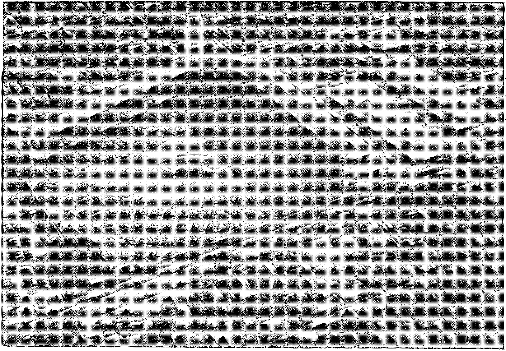
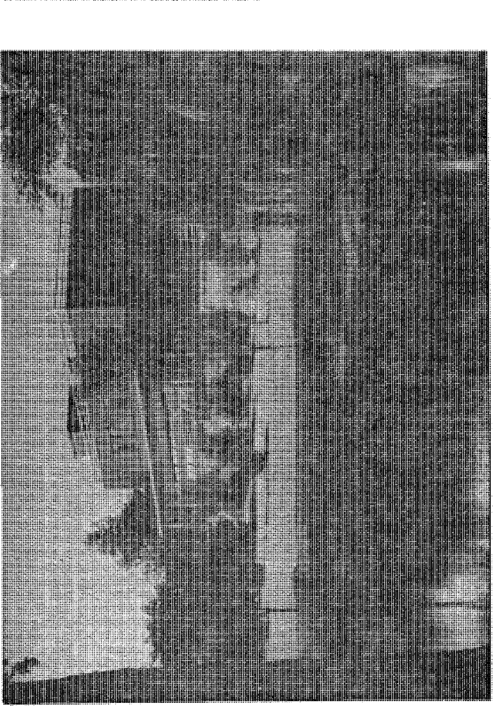

UNITING THE NATIONS
Practical example of die one force that can do it
Fear Dictates Hemispheric Defense
Rio pact betrays lack of confidence in U.N.
Cosmetics Span the Centuries
But not even their artful use is the means that will transform multitudes to youthful beauty
Murdering Jews over Moldy Bread
THE MISSION OF THIS JOURNAL
News sources that are able to keep you awake to the vital issues of our times must be unfettered by censorship and aelfish interests ’'Awake!” has no fetters. It recognizes fads, faces facts, is free to publish facts. It is not bound by political ainbitious or obligations; it is unhampered by advertisers whose toss must not be trodden on; it is unprejudiced by traditional creeds. This journal keeps itself free that it may speak freely to you. But it does not abuse its freedom. It maintains integrity to trutK
"Awake 1” uses the regular news channels,, but Is not dependent on them- Its own correspondents are on all continents, in scores of nations. From the four corners of the earth their uncensored, cn*the*acenej reports come io you through these columns, _ This journal’s viewpcint is not narrow, but is international. It is read in many nations, in many languages, by persons of all ages. Through its pages many fields of knowledge pass in review—government, commerce, religion, history, geography, science, social conditions* natural wonders—why, xis .cover* age is as broad as the earth and as high as the heavens.
41 Awoke!” pledges Itself to righteous principles, to exposing hidden foes and subtle dangers, to championing freedom for all, to comforting mourners and strengthening those disheartened by the failures of a delinquent world, ret lading sure hope for the establishment of a right* com? New World.
Get acquainted with ’'Awoke!” Keep awoke by reading ‘'Awake!”
PUJUISHFD HSUTMONTHLY BT ■WATCHTOWER BIBLE jVND TRACT flOCIETT, Th’Z.
117 AJiteb Street Brooklyn 1, N. 5f+p U. ft A.
5. H. Knokr, Grant Svizir, Ferrefary
Five conto a copy Ont dollar a yoar
Ivaltt^m •JiQLEia U Mitt- to eft* In Tfl* iwre-try 1; ‘nmplUr** wj'b Uj (uancteir
uh c*l!ttfy ct ixiCTy. £«3lUiw*s rt ti
lroc4'oc frv« ec'Jrtrtw wh*re oo nflta fe ;***•«:, i?r ■cnay artar babtcnpiiMi
him in ccjttrm are trr* *.UUJ R iottl
rvrifrcj. ...
Nftlc« if mtalloa Mill) !’
it leui twa tri^s «?>»mpUcD axprm.
Chiiigi ft rtfrtta sect to wr (Act ny N cxxtttd >£erUw wlioii oct meth, Srad old » m aw iJilm
Offiru 7fArty Botatrlptiozi i*1«
Atiriu. U.K.। 11T Adiww St., br^k'jji 1, N.I. SI A i rtf a1 la. T lid . StnttULld N.J.W. ft*
CvaUa. t0 1r«h Ave, Tcrmt) 5. Oct ado $1 Enflud. M I? i»er. Temrt, bxz<*n, W 2 E< SMth Mrln, B2-3 Bc^toc How, Cap* T*w» I*
Grand at s^wtl-cltw autur 14 BroQklja, N. T.f at. of Mirth 8, 18’9. Prloud Ln U. S. A.
CONTENTS
Tmtirg the Nations
Honolulu, Nev Zealand, Australia
Philippines, Stam. Burma
Strife-torn Indi si and Pa bestir e
The Mediterranean Arr.i
Visits +« Portugal and Spain
Conventions in Europe
Convention hi London
World Tour Climaxed st Starting Point
The One Way tn I bity
Fear Dictates Hemispheric Defense Conference Gets Coder Way
|
3 |
Some (rood .Advice |
|
4 |
Another Jolt to the Conference |
|
5 |
Cosmetic Span the Centuries |
|
e |
Cosmetics Move Westward |
|
6 |
A Commercial Racket |
|
7 |
The Art of Cosmetics |
|
7 |
How Do You Soive Proft/emsf |
|
8 |
Murdering Jews over Aloidy Bread |
|
ill |
llocua-pocufe |
|
1*2 |
Firs Uy the Get a *£Saint”! |
|
13 |
Shiloah, Gilead’s New Library |
|
14 |
Watching the World |
to to rc co i-11-11—। sj kj > j
Brooklyn, N.Y., October 8, 1947
Volume XXVIII
Number 18
Uniting the Nations
B DESPITE frantic tries for peace and unity among nations, the gulf that separates either remains uribridged or grows wider. Today the disappointing United Nations has shown no strength for a work of uniting. The religions of Christendom have heen hnllyhooed as a force suited for the role of unifier-of mankind, but the results prove them as divisive in the field of politics as their multitudinous sects and cults show them to be in the realm of doctrine and dogma. The nations continue to feint and maneuver, to boast and threaten, and to periodically explode in wars and hathe the world in blood and wash ever wider the separating gulf between nations. Disorder and confusion march toward chaos and ruin, and national governments have been powerless to halt the advance. Millions of thinking persons begin to wonder if there is a force existent anywhere that ean smash through the barriers of language and race and nationalism to bring about a peaceful uniting of the peoples of all nations.
There is such a force. For several years past its power for unity has been exerted with results that recommend its potency. The force is the true worship of-Jehovah God, a God not national, not racial, not a respecter of languages. His witnesses on earth have advertised Him as a universal sovereign. Unlike Catholics and Protestants of Christendom that allow their sects to be split open by language or race or nation even to the point of slaughtering their supposed spiritual brethren over national and international issues, Jehovah’s witnesses do not allow such earthly differences to break asunder their spiritual unity in pursuit of the true worship of the Universal Sovereign. The ability of this force of true worship to unite peoples from all nations is clearly exampled in the account that follows.
During August, 1946, an international assembly of Jehovah’s witnesses took place at Cleveland, Obio, with a peak attendance of 80,000, with representatives from all continents and many nations. At the closing session of the eightday assembly, however, announcement was made that during 1947, instead of having one big convention attended by representatives from all nations, there would be a series of Christian conventions held in many nations throughout the earth. It was to begin fulfillment of this proposal that on the night of February 20, 1947, N. H. Knorr and M. G. Henschel, president of the Wateh Tower Bible and Tract Society and president’s secretary, respectively, were aboard a big four-motored plane that skimmed over the airport runway at Burbank, California, and winged out over the brdad Pacific toward the Hawaiian Islands, where preparations for the first of these globe-girdling conventions were nearing completion. Five months and 50,000 air miles later, and after visiting 32 countries and giving public addresses to audiences totaling 58,000, these two traveling ministers completed their round-the-world flight by landing iu California for the final convention at Los Angeles. Attendance there by more than 45,000 swelled the aggregate world attendance heyond the 100,000 mark. In fleeting fashion Awake! here attempts to relive the highlights of that five months and 50,000 air miles in a few pages, with the climaxing finale being the All Nations Expansion Theocratic Assembly held in Los Angeles in August.
Honolulu, New Zealand, Australia
Landing in Honolulu the world travelers were greeted with dozens of leis of every descrip-tion and color, which were tumbled about their necks as the press cameras flashed and the hospitable Hawaiians joyfully received them into their midst. In reporting this event the Hilo Tribune-Herald said: “There is nothing unusual nowadays about anyone flying around the world, but this flight is different because the men are carrying a message of hope'and cheer to the people of all nations/’’ The cheering message was taken in by 838 pairs of ears in the Islands as Mr. Knorr spoke to audiences totaling that number in four cities.
In flight again the two travelers soon lost sight of Honolulu and curved over the surface of the sea toward New Zealand, but being slowed up in their arrival there by stopovers on the islands of Canton and Fiji (where they met with thirteen of like precious faith) and New Caledonia. The plane swooped down and rolled to a stop on the smooth runway of the Whenuapai Airport in New Zealand after a 5,000-mile trip from Honolulu. Traveling 450 miles down the North Island to Wellington, N. H. Knorr spoke to an audience of 817. Then back to Auckland, where he addressed a gathering of 300 before boarding a huge doubledeck British flying boat for the flight across the Tasman sea to Australia.
The Australian Branch of the Watch Tower Bible and Tract Society had first claim on the presidents attention when he arrived on March 11. During thte war years the Kingdom publishers in Australia had declined in numbers from 4,328 in 1943 to 2,713 by December, 1946. Manifestly the Lord had not been pleased with His witnesses there nor was His blessing upon His people in that land. Why? That was the question for answering. During the war communications were under censorship and reports to the president’s office on the Australian Branch were meager. On-the-scene investigation, however, soon disclosed that the Branch had been devoting much of its energy to operating various industries like commercial radio stations, sawmills, bakeries, farms and piggeries, commercial printing shops, machine shops, and even army canteens. Into this pitfail- of secularism the Branch had fallen and with it fell the activity of Kingdom preaching in that land.
Dispose of such Branch-sponsored industries and back to the field of gospel-preaching, was the instruction of the Society’s president. To purge out any lingering sentiments of such industrial pursuits and to put the commission to preach the gospel once more in first place in the mind and heart of the Australian witnesses Mr. Knorr arranged to make a speedy tour of the continent, holding assemblies in principal cities. The subject key-noted was “Mercy and Forgiveness”, and at each assembly a resolution was adopted amid tears of joy, not of sorrow, by the 4,726 faithful Christians present at these assemblies. The resolution expressed repentance on the part of the witnesses for past failures, and a determination to press the field witnessing work in the future. So doing, they may expect the Lord’s blessing, the same as resulted in the case of ancient Israel when the sin of Achan
was removed and a battle victory rewarded them at Ai. (See Joshua, chapters 7 and 8.) In addition to these organizational assemblies of Jehovah’s witnesses, the Society’s president gave several public lectures throughout Australia, with the total attendance passing the 5,000 mark.
Philippines, Siam, Burma
By circuitous flight from Aus-tralia, first to Singapore, then Bangkok, then Hong Kong, the tw0 traveling representatives landed at Manila in the Philippines on April 1. On all stops on the world trip thus far it was manifest that Jehovah’s witnesses dwell in solid and joyful unity despite language, color or national differences among them. This was especially emphasized in the Philippines when the chairman of the convention pointed out in his address of welcome that all present were of one blood, of one family, as true worshipers of Jehovah, be they Portuguese, American, Chinese, Ilocano, Tagalog, Pangasinan, Pampango, Bicolano, Cebuano, Boholano, Hongo, Leyteno, Samareno, Igorot, or Bagobo. “The Joy of All the Peoples” was the public talk highlighting the assembly and delivered before 4,200. This number, however, was only a small portion of those that heard, for the facilities of radio station KZPI were engaged, which station blankets the whole Philippine archipelago of 1,790 islands. Moreover, cameramen busily recorded on motion picture film the public meeting, later to be shown in every movie house in (he Philippine Islands.
There is no better example of the expansion of the Kingdom work than can be found in the Philippines. Up to the year 1912, when the first president of the Watchtower Society, C. T. Russell, spoke in the Manila Grand Opera House, there was not a single soul in the Philippines interested in the truth. Up to the time of the Second World War the good OCTOBER 8, JS47 seed had been watered and cared for until it had produced 371 publishers of the Kingdom message. Then, during the occupation of the Islands by the Japanese, and amidst violent persecution of the witnesses by those totalitarians, the Lord prospered the work, and now 2,847 published the gospel in those islands.
Engine trouble forestalled the proposed trip to Shanghai by Knorr and Henschel, and a tight schedule would brook no extended delay and demanded that they move on to meet their engagements at Bangkok, Siam. There, on April 9, in the Chulalongkorn University Hall the Society’s president addressed through interpreter an audience of 275, among whose numbers were foreign missionaries and local clergymen, plus three Buddhist priests attired in their bright yellow robes. Consequently it came as no great surprise when local Siamese papers broke out in a rash of false charges against the speaker after his lecture. The effort to discredit failed. The local representative of the Watchtower Society submitted an official copy of the speech to the C.I.D. (Britain’s Criminal Investigation De-partnjent). Close examination disclosed no statements defaming the Buddhist religion, as falsely charged.
Editors of the Chart Thai and La Liberte then extricated themselves from their predica-D MM ment by claiming that they had not heard the lecture themselves, but had relied on the statements of the Buddhist priests. Though it comes as novel news to Americans, who are used to both a lying and unrepentant public press, the newspapers in Siam apologized for misinforming the public. The Liberty newspaper, in its April 16 edition, carried the following headline across its front page: “Watch Tower Answers Criticism,” “Newspaper Editors Apologise for Injustice to Lecturer.” Also appearing on the front page of this newspaper was a signed apology by a Buddhist priest by the name of Kam Pan Kao-Wanarat. But while all these false religious charges were being cleared out of the way back in Siam, travelers Knorr and Henschel had moved on to Burma. The two-day stay in Rangoon coincided with the annual water festival, a Buddhist celebration with much hilarity. Notwithstanding, 287 made up a good attendance for the public lecture delivered in Burma.
Strife-torn India and Palestine
Troubled India, a land of seething unrest and religious turmoil where daily riots and bloodshed have become common occurrences. No unity in this land, either under British rule or under a nation divided into Hindustan and Pakistan. A lull in the rioting existed when the travelers landed in Calcutta, but the city Was under strict curfew laws. The inflammatory state of affairs, along with transportation difficulties, makes it difficult to assemble even a fraction of the population for a public lecture. Nevertheless, such a meeting was held in the park known as the Esplanade Maidan. Then, with Calcutta behind and Bombay ahead, a DC-3 plane flew the passengers over the torrid central plain of India toward another city in which curfew law's were enforced in. certain sections. With such conditions in prospect it came as a surprise to all "when some hours later 504 assembled in Bombay to hear Mr. Knorr point out that the religionists of Christendom are no better than the religionists of heathendom. This came as a cheerful draught to those in a land plagued by missionaries of Christendom who try to replace superstitions of the East with a variety of Western creeds which are just as ridiculous. It is noteworthy that in that land of division and strife and bloodshed all of Jehovah’s witnesses stand united in the true worship of the Almighty God. Into the land once trodden by the feet of Christ Jesus, the Prince of Peace, a large Skymaster of the Trans World Airline landed Knorr and Henschel in completion of the next stage of the world tour. But far indeed from Palestine is the spirit of the Prince of Pdace. In these days it is a caldron of hatred and strife. On the day of their landing the chief of the C.LD. and many police were killed in an explosion. Road blockades, barbed wire, armored tanks, machine-gun nests and sand bags are visible all along the way as one travels into Jerusalem, a city whose name means “possession of peace”. Under conditions then prevailing public meetings were im-possihle, but the travelers did meet privately with 40 of Jehovah’s witnesses in the town of Beit Jala. In nationality the attenders represented Arabic, Russian, Ukrainian and German, in addition to Jewish. But these nationalities, even the Arabs and Jews, presented no barriers that a common interest in Jehovah’s true worship could not brush aside. Time in Palestine permitted the two travelers to visit some of the places of historical importance, most of which, of course, have been taken over by money-hungry religionists of the Orthodox Catholic, Roman Catholic, Protestant and Mohammedan sects. In front of the place, where they say the virgin Mary was born three fat priests were seen rolling dice.
Short notice was given to the Lebanese telling them of arrangements for a short visit to that country. So it came as a pleasant view to the president when he saw 270 present at Tripoli to extend greetings. Thence back to Palestine and aboard plane for Egypt.
The Mediterranean Area
The presence of many languages has given a babel of tongues to the cities of Cairo and Alexandria, bringing in to that extent barriers to unity. Nevertheless the message of truth was sounded to audiences in these cities by the use of
interpreters, the speeches of the travelers being translated into Greek, French and Arabic. After regaling in this wise 175 persons at Cairo “and 240 in Alexandria, time allowed only for a hurried visit to the French Archeological Institute by the two travelers before the scheduled hop to Greece.
In disunited Greece the darkest conditions found on the whole trip were encountered. It is even a crime to talk about the Bible. Some of Jehovah’s witnesses have had their eyes put out, limbs broken, and some have been killed. This was not during the occupation by fanatical Nazis, but after Orthodox clergy had been returned to power. Because of these conditions the 10,000 of Jehovah's witnesses in that land meet secretly to worship God, broken down into little groups of about ten. Puhlic meetings, of course, were out of the question, but the travelers did meet with many of these faithful Christians in secret and measures were taken to advance the work of gospel-preaching in the land despite the clerical persecution.
In Italy Knorr and Henschel visited the,Vatican Library and saw the famous Codex Vaticanus 1209, a vellum manuscript of the entire Bible written in the fourth century. After viewing the Vatican’s fabulous ’treasures, gardens and collections of art that surround the so-called ‘‘vicar” of Christ they were deeply impressed by the contrast between this material work and the humble circumstances of Cbrist Jesus. The travelers found more pleasure by far in visiting the Rome company of Jehovah’s witnesses, which met in the very shadow of the Vatican. Journeying northward by rail to Milan the president was privileged Jo address an enthusiastic audience of 700 witnesses and persons of good-will.
Visits to Portugal and Spain
While Mr. Knorr and his companion were visiting through the eastern sec-
OCTOBER 8, 18i7 tion of the Mediterranean the vice-presidents of the Pennsylvania and New York corporations of the Watchtower Society, F. W. Franz and H. C. Covington, respectively, were busy organizing for unity in the Iberian peninsula. Spanning the Atlantic via Bermuda and the Azores, these two travelers were landed by Constellation plane outside Lisbon, Portugal, on May 5. Now Portugal, since 1932, has been ruled by a dictator believed to be a Jesuit, and as a result there is little freedom of movement in that country. Nevertheless, quite a number of persons were found that were devoted to Jehovah God and, one evening, 21 met with the Societies’ vice-presidents and an organization was set up that will speed the gathering of good-will persons in that land.
l.fSlUlL A similar state of affairs pre-vails in Spain with the Ro-man Catholic Hierarchy in full control. The two visitors were required to register with Franco’s International Police before they could move ahout. This condition met, the ministers from America had very profitable assemblies with 76 Christians' in the cities of Madrid, Torralva, Barcelona, and Barbastro.
Conventions in Europe
In France Mr. Franz and Mr. Covington attended a one-day convention in the city of Lyon, with 463 present. Then they pressed on to the capital of Switzerland, arriving May 22 and being greeted by Knorr and Henschel, who had arrived earlier from Milan.
Immediately a four-day convention in Switzerland got under way, being held in the spacious House of Arts and Conventions overlooking beautiful Lake Zurich. Attendance climbed, until on Sunday, May 25, there were 2,700 present. The chief accomplishment at this convention in Switzerland was the clearing up of the relationship of Christians
7 with the nations of tlus world, with stress being laid on the ministerial status of Jehovah’s witnesses and their recognition as such and that they not become confnsed with peddlers though they may accept contributions for literature containing printed sermons on the Bible. From now on all Switzerland will come to know who are Jehovah’s faithful ministers, in that land-locked country of magnificent beauty.
From Switzerland ministers Knorr, Covington and Henschel flew to Frankfort, Germany, and. then proceeded to Stuttgart, where a convention was attended by more than 7,000 men and women from the American and British zones, the majority of whom had been delivered from the Nazi concentration camps.
f The next unifying convention attended by this trio of minis-tens was at Briinn, Czecho-/wfflwhi* Slovakia, with an attendance at the public talk of 2,300. From Czechoslovakia Knorr and Henschel toured northward, attending a series of conventions in Denmark, Finland, Sweden and Norway. Attendances at public meetings held in these countries were: Copenhagen, 4,000; Helsinki, 5,300; Stockholm^ 3,256, and Oslo, 1,446.
While the president and his secretary were making this northern loop Mr. Covington addressed 1,700 assembled in convention in Austria. As in ’Germany and Czechoslovakia, the witnesses there rejoiced in the freedom gained from the Vatican-sponsored totalitarian rule under Hitler and are taking advantage of this freedom to preach the gospel of the Kingdom: Returning to Germany Covington attended conventions in Berlin, Magdeburg, Hamburg, Hanover and Essen. Attendances ran as follows: Berlin, 1,300; Magdeburg, 2,000; Hamburg, 700; Hanover, 600, and Essen, 900 (meeting in the latter city was held at a coal mine).
Simultaneously served with JpTa it conventions were France and ”the Low Countries, because from Switzerland Mr. Franz had journeyed to France, where he was joined by Grant Suiter, secretary and treasurer of the Watch Tower Bible & Tract Society, and these two served assemblies in Strasbourg, Paris and Douay before an aggregate attendance of 6,000. Similarly served with conventions were the cities Brussels and Antwerp and the duchy of Luxembourg. But the high point of conventions in this area came- in the Netherlands. This country had suffered much under Nazi brutality, and in 1940 there were only 400 publishers of the Kingdom here; but now thousands have been united to this small nucleus, for at the convention in the Netherlands 7,650 were present. Crossing' the Channel and entering England, Franz and Suiter separated, the former serving conventions in Scotland and the latter officiating at conventions in Dublin and Belfast, Ireland.
Convention in London
“Praising Nations Theocratic Assembly,” that was the name of the convention held in London, July 3-6, in Earls Court. For the occasion all five of the Society’s directors who had been traveling in Europe converged at that point. Earls Court Exhibition building is itself something to talk about. The main hall is capable of holding 20,000 persons and there is room for thousands more in other parts of the building. It is believed that Earls Court is the largest singlespan auditorium in the world. No obstructing pillars mar the view of any person seated in the main hall. Appropriate decorations delighted the eye and an excellent public-address system carried the messages from the platform to all the attentive ears. A small army of 710 volunteer ushers, including 140 usherettes, served the 13,000 witnesses present from all parts of the British
(1) Gonventioners in Amsterdam traveling to territory for witnessing. (2) H. C. Covington, British Branch servant Pryce Hughes, and N, II. Knorr, at London convention. (3) Session at London convention.
Isles, as well as a sprinkling of witnesses from the continent of Europe and a delegation from the United States.
Good weather was a boon to the field witnessing work. More than 7,000 publishers were active in preaching the gospel from house to house and 4,000 shared in the information walking and magazine publishing on the streets, covering all central London and the West End suburbs. Hundreds of banners on busses and private cars, 30,000 posters and 1,250,000 distributed handbills thoroughly advertised the Sunday afternoon lecture entitled “Permanent Governor of All Nations”. A bus strike throughout the London area was in force on this day and was reported as effecting an 80-percent stoppage. Also, the day had been declared by the king as a national day of prayer, vith special services at St. Pauls Cathedral to be attended by the king, queen and prime minister. The bus strike, however, shriveled the anticipated 5,000 attendance to 2,000. Hence, what joy it was to Theocratic conven-tioners at Earls Court when nearly 18,000 persons gathered to hear the Watch Tower president's public lecture! Surely the “Praising Nations Theocratic Assembly” at London is the harbinger of a great forward advance of The Theocracy in the British field.
World Tour Climaxed at Starting Point
Speeding homeward by air Mr. Knorr and his secretary had time to stop off in Newfoundland and attend a three-day convention of 206 Christians there. Another stop at the Society’s headquarters in Brooklyn, New York, then on to California and the Los Angeles convention flew the travelers to bring to a close the round-the-world tour. In anticipation of hearing firsthand reports from the Society’s president and the other travelers, thousands upon thousands of witnesses in this land converged upon the convention city on the west coast. The assembly place was Wrigley Field. On opening .day, August 13, more than 27,000 filled the stands and overflowed onto the green playing field.
Loudspeakers installed in adjoining tents and a tent-and-trailer city a few miles distant swelled the overtaxed facilities to care for several thousand more. Incidentally, the population of the tent and trailer city that had sprung up a few miles distant numbered 9,000. Fok their accommodation many departments had been installed, such as a grocery store, cafeteria, post office, first aid, etc, A laundry consisting of 40 washing machines and 60 electric irons was very much appreciated by the thousands that had traveled over hot desert roads to attend the convention. In equipping this tent city with water and electricity 12,000 feet of pipe and 50,000 feet of cable were used.
Back in Wrigley Field the chairman in his address of wel-Hfcz '<ii come drew notice to the fact that 34 percent of the attendees hud come from east of the Mississippi, 15 percent from the Atlantic seaboard (3,000 miles away), 12 percent from Canada, and many others from Alaska, Mexico, South America, Central America and the islands of the Caribbean. Who were they? They were ministers ordained by Jehovah God! A strong point was made of the fact that in 1890
200 of God’s ministerial witnesses had assembled in convention at Allegheny, Pennsylvania, but now their numbers were swelled to many thousands. Like the apostle Paul, these ministers could say: “I am no peddler.”—2 Corinthians 2:17, An American Translation,
W ednesday evening the Society’s president sounded the keynote in discussing the subject “Pushing the Advance of True Worship”. By Thursday the convention was in full swing. The cafeteria organization worked with exceptional smoothness and, despite limited space, 908 volunteer workers fed persons at the rate of 5,000 an hour, and served a total of 74,000 meals. Fridays program held an attraction for all in attendance, as it w’as the day for world reports by Henschel, Franz, Suiter and Covington in the afternoon and Knorr’s report in the evening on “All Nations Expansion”, The report carried the thousands assembled along the trail of the world tour and made them feel at unity with Jehovah’s witnesses in many lands. Only 13 are assembled in the Fiji islands, 100 in far-off Calcutta, 40 in Palestine, in Greece a few are gathered together in secrecy, in Spain a few lovers of The Theocracy are found, in Italy the harvest is ripe but the laborers are few, and in London the greatest convention of Christians ever held in Europe is reported! As this news from foreign lands is related there is aroused no feeling of prejudice or hatred or nationalism, but only a unity in Christian purpose that batters aside as insignificant such divisive forces as language, race or nationality.
— When the conventioners heard i10W 10,000 of Jehovah’s wit-- nesscs went into Hitler’s con-•>. centration camps, bow 2,000 of them never came out alive, how 2,000 of those that did come out were too weak and sick to work, and how the remaining 6,000 began preaching the Kingdom message two years ago and that the re-
OCTOBER 8, 1917
Aerial view of grounds for “AlUNations Expansion” Assembly held at Los Angeles, California. The Wrigley Field stadium is shown packed out at the time of the public lecture, “Permanent Governor of All Nations,” with thousands seated out on the playing field. To the right are the tents used to accommodate the cafeteria and other departments, and also used to. seat part of the 45,729 that attended.
suit is that today there are 19,200 publishers of the Kingdom in Germany, joy soared far above the power of words to describe. Joy stayed on this high plane during the evening as the Society’s president reported on the highlights of his travels, and it even struck new highs as it was pointed out that today Jehovah’s witnesseswinhabit 84 nations. Graduates of the Watchtower’s missionary school served in 29 foreign countries a year ago, but they now minister to persons of good-will in 65 nations. Publishers have increased more than 30,000 during the last year, with the world-wide peak now 202,100. Tugging at the heart strings of those assembled, the report showed the conditions under which Jehovah’s witnesses and other persons must live in such lands as Germany, And what joy it was for the conventioners to learn that arrangements have been made with the CARE organization to prepare special packages of food at a nominal cost of seven dollars per 21-pound package to send to the faithful witnesses in Germany and Austria to help tide them over the coming winter! Long did the audience applaud this charitable move and the opportunity for them to contribute financially to prove their love for and oneness with their Christian brethren in other nations!
Additional Bible lectures that were programed led up to the public meeting to be held Sunday afternoon, August 17. Advertising efforts for this talk had been turned on full blast. Billboards, streetcars, private automobiles, and even witnesses wearing 10,000 placards, had participated in the mammoth publicity campaign. From house to house, in business places,' on the streets, the witnesses had distributed handbill invitations numbering 2,300,000. This broadcast sowing bore fruit on Sunday afternoon, Soon multitudes filled up. every seat in the stands, the bleachers, and the overflow seats in the adjoining tents. The still-coming thousands overflowed out on the ball field to fill the thousands of additional chairs placed there. The final count revealed as present 45,729!
Introduced by Chairman Franz as a world traveler just having completed a 50,000-mile tour by air in which 32 countries had been visited and over 50,000 persons addressed through a score of interpreters, and also as a minister and ambassador of God’s kingdom, the Society’s president took his place before the microphone to regale them with the speech “Permanent Governor of All Nations”. To properly treat this subject it was necessary for the speaker to show the fallacies of the United Nations and any of its.claims as a permanent governor ushering in peace and unity among nations. Irresistibly the points piled up to prove, in the end, that only Christ Jesus could bring peace and unity to persons of good-will from all nations, kindreds and tongues. Repeatedly vigorous applause showed audience agreement to the forceful arguments advanced and by far the majority of the thousands present realized at the lecture’s close that only true worship of Jehovah could sweep aside the divisive forces to weld into indissoluble unity good-will persons from all nations.
Already the force of true worship of God as a unifier is making itself felt in the earth. The world travelers found a bond of unity existing among Jehovah’s witnesses regardless of national boundaries or language differences. During this series of world conventions incomplete reports show that over 2,500 persons were immersed iu water to symbolize their consecration to Jehovah God and an agreement to follow in unity His true worship. Moreover, a multitude of persons will, yet be drawn from all nations into this spiritual unity and peace as the. King Christ Jesus marches forward in .His work of uniting persons of good-will from all nations.
II
TffE official name of the conference of
American nations at Petropolis, some forty miles from Rio de Janeiro, Brazil, is the Inter-American Conference on the Maintenance of Peace and Security, It is commonly called the Rio Conference. Actually the Conference, which opened on August 15, was a further development of the Act of Chapultepec, formulated during World War II for the cooperation of American nations against a real enemy. The purpose of the Rio Conference was to frame a treaty for cooperation against any potential enemy that may arise, not mentioning any names. It was an interesting occasion from many standpoints.
First of all we should have a look at the national conferees represented at Rio by their respective foreign ministers, The nineteen nations so represented were all sizes and kinds, all nominally democratic and all to some extent aware of the power of the great nation that, perforce, exercised a leading influence in the deliberations—the United States of America.
As next in importance many would designate Argentina, at the opposite geographical extreme of the territory involved. In some respects Argentina may be viewed by some as also being at the opposite end in the matter of democracy, being measurably authoritarian, Vying with Argentina for second place in the galaxy of American nations is Mexico. There a considerable degree of democratic freedom is operative, though it is fought by the troublesome Hierarchical re-
OCTOBER 8, 18i7
ligious organization having headquarters at Rome. Brazil, too, contends for recognition as the most eminent of Latin-American nations, and it is certainly the largest, territorially, though designated “backward” economically. Democratically it is making progress. Communism is outlawed.
Going on to the lesser Latin-American nations represented at Rio and without adhering closely to the order of size or importance, there are the following:
Venezuela, with a good record as a democracy; Colombia, which also has a good record as to general freedoms, though the standard of living is low; Ecuador, which is more or less dictatorial, and socially backward; and Peru, not far advanced economically, exploited by foreign investors. Chile is described as good in respect to basic human rights, and more advanced in social legislation than any other country in the Americas, including the U.S.A. Paraguay, which could only send observers to the conference, is presently in a state of revolution. It is one of the most backward of Latin-American countries, ruled by a dictatorship, Uruguay stands high as a democracy, and is the most advanced Latin-American country. Guatemala is called a banana country, with a fairly democratic setup. El Salvador is not bad in respect to religious and other liberties, but economically backward, Honduras recognizes freedom of worship, but is backward in many other respects. Nicaragua, not represented at the conference because of
13
a recent coup d'etat that ousted the recognized government, has freedom of worship, but is otherwise unprogressive. Costa Rica is good in all democratic respects, and is the only country in the world with more teachers than soldiers, Panama is advanced in the matter of democratic freedoms, as well as socially, Cuba recognizes all basic human freedoms, and is progressive. Haiti, while good on freedom of worship and of the press, is economically disadvantaged. The Dominican Republic recognizes religious liberties, but not many others, being an absolute dictatorship.
It became apparent, as the conference got under way, that there might be quite a variety of aims brought to the fore, but Secretary of State Marshall sounded a definite note as to what the objectives of the deliberations should be. Stating the position of the United States, always a weighty matter, he expressed himself in unequivocal terms. Also, the conference had a blueprint before them in the Act of Chapultepec of March, 1945, which, in fighting the Axis, called for the use, by all or some of the signatories of said treaty thereto, of any one or more of the following measures: Recall of chiefs of diplomatic missions; breaking of diplomatic relations; breaking of consular relations; breaking of postal, telegraphic, telephonic, radio-telephonic relations;, interruption of economic, commercial and financial relations; use of armed force to prevent or repel aggression.
During the Second World War, all of the 21 signatories to the Act of Chapul-tepec took the foregoing steps in declaring war against the Axis. Similar steps would be urged in connection with the proposed Pact of Rio.
The representative of Argentina, Dr. Bramuglia, came with a strange proposal, coached by his chief, President Peron. He said Argentina would insist upon "absolute and complete American solidarity*'’, What this would amount to was further shown by the statement, “Argentina will support unanimity in the assembly.’* That, in the opinion of most of the representatives at the conference, meant that Argentina wanted to introduce the veto power, which would enable one nation to block action of all the rest. It was hardly a democratic proposal, and Dr. Bramuglia softened the sinister significance of his words by adding; “But the decisions of the assembly are by a majority, and we who represent a truly democratic people will accept the majority.”
Argentine professions of democracy were somewhat under a cloud at the conference, and Secretary of State Marshall took occasion to remark: “We must reject encroachment upon the fundamental rights of the individual with the same determination that we reject encroachment upon the fundamental rights of the state.” Such encroachment had taken place in Argentina, and although the conference was not intended to act on these matters, it was timely to remind the conferees that they were there because their respective nations professed to acknowledge such rights.
Secretary Marshall further stated, “I am confident that we all agree that the state exists for man, and not man for the state, and we abhor any limitation upon the freedom of expression of men throughout the world,” These were fitting words, in view of the fact that Peron’s government had just suppressed a newspaper for criticizing SenoraPeron.
A disposition to introduce economic matters into the conference was strong at the beginning. The Latin-American countries also have their economic difficulties. Cuba, particularly, wished to bring up what her representative called “economic aggression”. Secretary of State Marshall, however, told the conference that economic aid for Europe was of primary importance, and must be given first consideration by the United States. He promised that at the prospective conference to be held at Bogota, Colombia, the economic problems of the entire hemisphere would be dealt with. A later conference, to be held at Buenos Aires in 1948, would go into the InterAmerican economic setup still more extensively. The Rio conference then settled down to the business for whieh it had come, the defense pact arrangements.
Another Jolt to the Conference
Argentina next gave a jolt to the conference by offering the unique proposal that the American nations agree to take military measures only when aggression occurred from someone outside the hemisphere. Argentina eventually bowed to the decision of the majority that aggression is aggression, whether it comes from near or from far, and that the same resistance should be offered.
Once more, toward the close of the conference, Argentina sought to limit the scope of the treaty by proposing that an amendment be added which would prevent application of its provisions in case of an attack on any American forces abroad. This proposal was finally voted down, and the writing of the final form of the treaty progressed without further incident.
Three nations which were not represented in the signing of the treaty, Nicaragua, Ecuador and Canada, may have opportunity to do so later, if they desire to adhere to its terms.
The general effect of the Rio Pact is to continue in treaty form, with suitable adaptations, the provisions of the Act of Chapultepec of March, 1945. It provides, fundamentally, that when two-thirds of .the contracting parties have ratified, the nation# of America will have bound themselves to the principle that an attack on any one of them will be considered an attack on all. The articles provide, however, that any country that declines to fight with armies may join in resisting an aggressor by action through economic sanctions. But no one may remain entirely neutral if the constituted consulting body decides by a two-thirds vote to take action. The various articles of the treaty set forth details and drew lines from north pole to south pole enclosing the territory covered in the treaty. The finished instrument is called the In ter-American Treaty of Reciprocal Assistance.
President Truman, accompanied by his wife and daughter, flew to Rio de Janeiro August 31 to attend the final session of the conference, and to be present at the signing of the treaty. It made a nice trip for the family. Secretary Marshall and Senator Vandenberg, who had accompanied him, upon their return to the United States, made their report to Americans via radio. Said Senator Vandenberg: "We have sealed a pact of peace which possesses teeth. We have not deserted or impaired one syllable of our overriding obligations to the United Nations. This pact is not a substitute for the United Nations. It is a supplement to the United Nations and part of its machinery.”
While the Inter-American Treaty of Reciprocal Assistance appears to cement the nations of the Western Hemisphere more closely together, and while such regional arrangements are recognized by the United Nations as allowable, it does seem that there is in the Rio Pact an acknowledgment of failure of the United Nations organization to infuse confidence into its members that it will be able to carry out its purpose to preserve the peace. The attempt to do in a hemisphere what the United Nations presumably is doing on a worldwide scale still echoes the theme of war and aggression. Such sense of insecurity will continue to plague the nations until Jehovah makes wars to cease even u»io the ends of the earth.—Psalm 46; 9.
/COSMETICS have long Vj been a target of criticism from many quarters. Some have objected on moral grounds; some have called them a commercial racket; others have warned that they are harmful to health ; and still others claim that they mask and cover up natural beauty. Intelligent and constructive criticism of cosmetics is both helpful and beneficial, and such is logical, reasonable and supported by the facts. However, unfounded and ill-tempered criticism is both distasteful and repugnant. Of this latter type is that which comes from sallow-faced, drab religionists who look upon and denounce users of cosmetics as wicked women and “children of sin” in these ‘last days”. But it cannot be said with truthfulness that today's universal acceptance and use of cosmetics is due to the moral degeneracy find delinquency of this twentieth century. The thousands of Christian women who use cosmetics in one form or another brand this statement as false. Moreover, these beauty preparations were not first used by women nor are they a modem invention, but as the historical facts reveal they were first introduced by men and their antiquity is as old as profane history.
Egyptian priests and kings as far back as the first (Thinite) dynasty, two thousand years before Christ, practiced the painting of their eyelids and nails. They painted their lower eyelids green and the upper lids and lashes black. Four shades of paint were used for the differ-
ent seasons. Today a lady feels “in the fashion” if she merely paints the nails on her fingers and toes, but those Egyptian glamour boys rflso painted the palms of their hands a?d the soles of their feet. The widespread use of cosmetics launched one of history's oldest commercial enterprises. Arabia, land of perfumes and spices, furnished the raw materials—myrrh, frankincense, spikenard, and oils of sesame, olive and almond. From these sense-pleasing ingredients those ancient cosmetologists developed a high art of perfumery, as shown when the tomb of King Tutankhamen was opened in the 1920’s.
Just when the women began to borrow cosmetics from the men is not known. By 909 B.C. notorious Jezebel in Israel “painted her eyelashes and adorned her head” to impress conquering Jehu. (2 Kings 9: 30, An American Translation) Centuries later the prophets Jeremiah and Ezekiel spoke of the Jewish women’s using paint. (Jeremiah 4:30; Ezekiel 23:40, Am. Stan, Ver,) The substance used by the Egyptians for blackening the edges of their eyelids was called kohl, a mixture of soot, antimony and other substances. Rotherham says that Jezebel “set her eyes in stibium”, the crude substance having a brilliant metallic luster from which antimony is derived. Such a mascara on the eyelashes made them appear darker and longer and was thought to add charm
and expressiveness to the eye by heightening its brilliance, and when applied as an eye-shadow it provided a background for the eye, making it appear large and deep, especially under artificial light. Even the painting of the eyebrows to make them strong-appearing and thick has been th,e practice in these Eastern countries. E, S. Waring. (1807), in writing of his tour in Persia, said:
A large, soft, and languishing black eye, with them, constitutes the perfection of beauty. It is chiefly on this account that the women use the powder of antimony, which, although it adds to the vivacity of the eye, throws a kind of voluptuous languor over it, which makes it appear, (if I may use the expression,) dissolving in bliss. The Persian women have a eurious custom of making their eyebrows meet; and if this charm be denied them, they paint the forehead with a kind of preparation made for that purpose.
Cosmetics Move Westward
By the time that cosmetics reached their? zenith in Egypt during Cleopatra’s day, the Greeks had long before adopted their use and had introduced them to Italy and the Roman empire. It seems that it was the Roman beauticians that decided on a full “pretty up” job for the whole face rather than the eyes only. They were the first to make a face powder out of white lead and chalk. Later rice and -wheat grains were ground in stone mortars and used as powders, but zinc oxide was not introduced in face powder until 1866. Pliny tells us that they also ornamented their eyes like the Egyptians., After his day they went farther. It was the Italian ladies who first sought to enhance their beauty and heighten the lure of their dark eyes by dilating the pupils. They took an extract from the seeds of the deadly nightshade a id put it in their eyes, and thus the plant was renamed bella donna, meaning “beautiful lady".
By the time Nero became emperor, A.D. 54, cosmetics had become an imppr-OCTOBER 8, lBi7
tant part of court life. Not only did his wife Boppaea use the artificialities, but also Nero himself indulged liberally. The Romans had a toilet kit almost as large as present-day ones. They had their face powders of chalk and white lead; their Egyptian kohl for their eyelids and lashes; their rouge for lips and cheeks, called fucus, which they got from the red dye of a lichen; their psilotum depilatory given to them by the Greeks; their cold creams and cleansing creams; their barley-flour and butter mixture for pimples and skin eruptions; their pumice stone for whitening teeth; and their hair bleaches which they got from Gaul.
By the Middle Ages the crusaders picked up some cosmetic ideas in the East and brought them back to Europe and England, but, like the tides, fashions among beauty aids come and go. Even for a brief time they lost favor with the ladies in both France and England. During Queen Elizabeth’s time the feminine sex decided it would be smart to relinquish their superficial adornment to the gentlemen and try letting nature’s beauty speak for itself, enhanced only by that “freshly scrubbed look". The recipe for an Elizabethan complexion began with a hot bath and ended with a rinse or sponge-off of red wine. If it were not within a damsel’s means to bathe in wine, she was content with a mere milk bath. And, believe it or not, women of that period “in the natural” lost none of their appeal in the eyes of the men. In fact, when this “natural beauty” fad ebbed in popularity and women retrograded again to cosmetics, some old, crotchety member of Parliament rose up, in 1770, and actually offered the following bill, as reported by G. V. Septimus Piesse in his Art of Perfumery:
All women of whatever age, rank, profession, or degree, whether virgins, maids, or widows, that shall, from and after such Act, impose upon, seduce, and hetray into matrimony, any of his majesty’s subjects, by the scents, paints, cosmetic washes, arti-
firial teeth, false hair, Spanish wool, iron stays, hoops, high heeled shoes, bolstered hips, shall incur the penalty of the law in force against witchcraft and like misdemeanors, and that the marriage, upon conviction, shall stand null and void.
Though this stupid bill never became law in England, a similar one was written on the lawbooks of Pennsylvania in the same year. Also in the old colony in East Jersey it was once a crime punishable by death for a woman to use such devices as perfumes, high heels, false teeth or cosmetics to deceive and catch a husband. But it would have been, just as. well if these laws had never been passed, for all the prevention they did.
Spanning the centuries from the first dynasty of Egy^t down to this twentieth centnry, cosmetics have expanded their influence over the face of the earth, and with this growth has developed one of the greatest commercial businesses of all times. One concern alone advertises 18 shades of lipstick and fingernail polishes to match. Before World War II there were over a thousand brands of face powder registered with the trademark bureau in Washington, D.C. Last year American women spent $21,500,000 just to beautify their hands, and during the fiscal year 1946 the sales of cosmetics in this country amounted to $863,470,-000. More than a ligitimate business, the field of commercial cosmetics contains some of the worst fakers, witch doctors and outright robbers there are. Peter Morell, in his book Poisons, Potions and Profits, says that the cosmetic business is the “rankest of all our commercial rackets”. And the facts seem to ably support the assertion.
Take a look at the margin of profit on nationally advertised brands, as reported by the Bureau of Health in the state of Maine. The material in a dusting powder used after bathing costs l^c, yet it sells for 75c; lipstick costing 2c sells for $1.00; face powder worth 3e sells for $1.00. To make such huge profits it is necessary to sell them. So the press and radio are employed to gush forth propaganda slush in order to convince the woman past thirty that unless she does something about it she will soon look like a total wreck. A good description of the radio publicity that is fed the people is the following, by Morrell:
These pseudo skin-specialists, hand-specialists. head-specialists, and hair-specialists, all employing the abracadabra of dermatofogy, cajole, persuade, plead, frighten, threaten and resort to any and every form of exhortation to bully milady into buying the product peddled by these “pifteh-men” of the air.
They prescribe elaborate beauty rituals which promise to achieve a metamorphosis in every ugly duckling and endow her with the seductive glamour of a cinema star. Is it difficult for you to charm a man? Use this lipstick and he is yours—absolutely guaranteed. Has your husband's love for you died? Use this beauty cream and it will reawaken in him that poetic ardor of youth. He will wrfo you once again with that love which keeps a woman eternally young and lovely. Are you unemployed? Use this shampoo and the job is yours. You will never get that promotion and raise in salary you so well deserve unless you use this hand lotion. And so on ad abswdum.
He could have gone on and told about the drivel that runs out pf the mouths of these publicity agents about care for the hands, hair and skin; the wild claims about eyelash creams’ actually making the lashes grow longer, thicker and darker; and about the rubbing out of wrinkles. The latest hoaxes that are being used to boost sales is the incorporation of vitamines and hormones, especially sex hormones, in creams and then peddling them off on the gullible public as ‘‘skin foods” that will rejuvenate old flabby skin. From time to time harmful preparations are found on the cosmetic counters due to the zeal in bringing out new products without fully testiug their effects upon the human guinea pig. So
there was “Othine” freckle remover with its irritating and poisonous ammoniated mercury; “Kolor-Bak” hair “restorer'' with its lead acetate poison; Koremlu depilatory cream with its deadly rat-poison, thallium acetate.
The only purpose of Big Beauty Business is to sell more cosmetics; hence their advice to the ladies is “lay it on thick”. Those, however, who follow this poor advice and plaster on several extra layers of synthetic, laboratory-certified, test-tube “beauty” defeat their own purpose of making themselves beautiful. How repulsive the woman whose face looks like an advertisement of Sherwin-Williams paint splashed on the chalk cliffs of Dover! For art's sake don't look like Lulu, “the only woman clown in the world,” who was said to be “not much more overpainted than many of the glamour girls”. After a survey of the opinions of one and a half million college men the advice to girls is “a minimum amount of make-up applied with a maximum amount of care will suit a college suitor”. The famous model expert, John R. Powers, says: “I have a grudge against Hollywood make-up men. They wring the naturalness out of a girl and then create a 'screen personality^ by building sex and attractiveness into her. They take fresh peaches and make them into canned peaches. I prefer fresh ones.”
Two of the most misleading cosmetic ideas are -the fads of plucking the eyebrows and. painting darkly the fingernails. The girl that pulls out her eyebrows makesTierself look like a plucked chicken, which is anything but beautiful. From an artists viewpoint eyebrows give personality to an individual. Heavy eyebrows add strength to one's personality ; rejnove them and one looks like a lifeless wax dell Painting the fingernails blood red, in contrast with using a natural or light-pink polish if desired, also defeats the purpose to beautify. A
OCTOBER 8t JS47
graceful hand is one that looks long and slender with tapering fingers, but when the ends of the fingers are heavily darkened they look chopped off, short, stubby and clumsy. Any student of real art will tell you that this is so, but don't expect the commercialists that are selling millions of dollars' worth of red nail polish to tell you these simple truths.
Cosmetics should not be used to create a new and different creature. But one who has consideration for others does not like to be offensive fin the nostrils of fellow creatures, nor repulsive in their sight. Hence the only purpose of using cosmetics should be to mask over the imperfections and blemishes of the body, and the inroads of degeneration made by the creeping forward of old age. To accomplish this is an art. The person that is successful in this art uses cosmetics with such good taste that it is difficult to detect the camouflage. Use cosmetics with moderation. One should never be vain in trying to make oneself appear so worshipfully beautiful in the eyes of fellow creatures that one receives the flattery and praise of men. The proper use of cosmetics is an art. If you use them, use them artfully.
While excessive use of cosmetics may rightfully be criticized as defeating the purpose for which they are intended, there seems to be little ground for the criticism that comes from certain prudish religionists. “Look at that wicked woman Jezebel, how she painted herself,” they will say. Jezebel's wickedness, however, was not in the dolling herself up. Rather it was because of her whoredoms in the land that she was thrown out of the window and trampled under foot by Jehu’s horses, and that in spite of the fact that she had made herself to appear beautiful and queenly. Jeremiah and Ezekiel did not say that the ungodly nation of Israel would be destroyed because they beautified themselves, but rather in spite of this fact, they would be brought low because they had rebelled
19
against Jehovah and violated His law. In the days of Jesus cosmetics were in common use, yet He did not condemn their use. ft was wicked Judas, not Jesus, that reproved Mary for pouring the precious alabaster perfume on the feet of Jesus. (John 12: 3-6) Tt was the Catholic bishop of Carthage, Cyprian, of the third century, who did write with a 'Qiolier than thou” attitude that so-called “Christians” “anointed ’their eyes, not with the devil’s antimony, but with the eye-salve of Christ”*
Neither the apostle Paul of Home, the Rome of Nero’s day, nor the apostle Peter who visited Babylon condemned a sane and moderate use of cosmetics. Nevertheless, they both wrote that the outward attractiveness of a woman was not the main objective for which to strive, (1 Timothy 2:9,10; 1 Peter 3:3,4) Their writings are not to he interpreted to mean that women are to see how drab and puritanical they can appear, with no thought given to neatness or comeliness. Christian women make the Kingdom the big thing in their lives, and primarily ornament th einselves with the spirit of Christ, and do rot stop at mere ornamentation of their person cr with wearing of colorful apparel. They know that “beauty is vain: but a woman that, feareth the Lord, she shall be praised” (Proverbs 31:30) Striving first for the important ibeau:v of holiness in devotion to Ged’, men and women alike know that those blessed with life on earth in Jehovah’s new world will become beautiful in physical perfection. Jehovah will make “every thing beautiful in his titne”. Those displaying active faith in the ransom will experience a transformation to youthful beauty ihat no cosmetics can effect: “His flesh shall be fresher than a child’s: be shall return to the days of his ye nth.” (Job 33:25) Use cf cosmetics has spanned centuries, hut never was it made an issue by Jehovah’s prophets or Christ or the apostles. It is no issue now*
Do You Solve Problems?
Not everyone is a ‘'go-getter” when it wmw to tackling a problem and stict-iug to it until it ii solved. Many people have other methods. A few months ago Professor R. II. Seashore, of Xortnwe stern University, as reported by Science News Letter, made up a Ikt of different methods. used. Direct At
tack: A person using this method goes straight at the trot?rue, stays at it. and works until it is solved. Goinp Around; Using this method one dodges obstacles and issues or tries a different approach, Escape; By ignoring the problem or quietly waiting until something else happens to relieve the actuation a person tries to escape the necessity of solving the problem. Diverei&n: Some people try to divert attention from the problem or iaauo by Hying into a tantrum of ill-temper. DisnijMflk Sometimes individuals use this ‘‘sour grape” method by pretending that the issue or question is not important and needs no solution. Excises: The one using tikis method tries to blame other conditio na cr people for the problem, Reflected Ciory: Using ibis method one hangs- around brilliant people who are able to sc We his problem, in order that he will get the glory. Dreaming: Another method is tn completely ignore the real problem and daydream about imaginary success. Setting Atteatmw; Failing to solve the problem some try to attract attention to their endeavors, even if it Is rot favorable, Quitting: The felkw that plays sick or childish so that he is not expected to solve the problem is using this method* Forgetting: This is an old and fully tried method, but not successful. Everyone. according to the report, has a*, some time in his iite tried these rsetaods of solving hfe’s multitudiDoufi problems. Is any of them your favorite?
DEMON religion is a very powerful spellbinder. Reason crumbles and rots under it. Ln its name history's most senseless deeds, most wanton murders, have been committed. The degree to which those acts are void of reason is the degree to which their perpetrators have succumbed under its influence. For example, demon religion has impelled people to fanatically murder Jews over a piece of moldy bread.
The Jews were not massacred because somebody wanted to oat the moldy bread; people were starving for bread at the time, that is true; but they would not have eaten this particular bread on pain of death. In their eyes the molded bread was an object of worship. Because their religion made it out to be the literal flesh of the Son of God, they could not recognize common bread mold on it when they saw it—for who could believe that (rholy" bread would moldf No, it must be bleeding, bleeding literal blood. When told by priests that Christ-hating Jews had stahbed the consecrated wa-fers, so-called “Christians” slaughtered whole communities of Jew's in religious frenzy.
Murdering Jews over moldy bread was but one of those typical psychological epidemics that swept Europe during the Middle Ages. It broke out on the heels of the Lateran Council of A.D. 1204, when the pagan doctrine of transubstan-tiation was adopted, and sanctified into the Roman Catholic Church. By this doctrine the w’afer used in the sacrament became identified with the literal flesh of Jesus, just as the pagans identified the wheat grain with the literal body of Persephone, a goddess in ancient mythology. As under paganism, so now in OCTOBER s ;s47
“Christian” eyes, the sanctified bread became an object of worship, a profoundly revered idol. To this day some of Christendom’s religious sects teach transub-stantiation.
The social, educational and spiritual state of the people A.D. 1204, when Catholicism embraced the doctrine, was the responsibility of the “Church". It was a day when monasteries dotted the land and gave birth to much philosophy and religion. Life, we are told, during the Middle Ages grew “mellow"; so does the carcass of a dead dog after decay sets in. In fact, life mellowed to a state of intellectual rottenness where people could not make out the difference between common red bread mold and a drop of blood.
The baking of “holy bread" could be done in a convent or else by any priest On the small round wafers they would draw such designs as the letters Alpha and Omega, or the picture of the kneeling lamb, or three crosses. The wafers were kept in a “tabernacle", and were thought to be in “a middle stage between the flour and. the sacrament” until consecrated by the priest. The clergy guarded them anxiously. Peasants stole them to feed to their cattle—not meaning to desecrate the ‘ Host” but it was their ignorant way of showing a paternal love for their boosts. Magicians and witches learned that it paid to get hold of the “Host’ for their practices; was not the altar bread surrounded by supernatural awe! Then these fellow travelers of the religious racketeers made capital of it Wafers wore even offered up to the ‘Lord of Hei” in Black Masses to Satan.
If somebody defiled a wafer, or even tried to defile it, the wafer had a wav
J M
of letting him know about it. It "bled”. This wafer 'blood (red or brown encrusted mold in reality) was seen by thousands of people from end to end of Europe. Wherever bleeding wafers cropped up, a terrible fear fell upon the people. In Germany, France, Spain, Italy, everywhere, the horror spread.
Who was guilty <
The Jews. They hated Christ. Now they were desecrating the sacred “Host”, stabbing it, crucifying Him all over again. Thieves were placed on the rack and made to “confess” that Jews had hired them to steal wafers.
A fearful murder wave swept medieval Christendom. In the town of Berlitz, near Berlin, A.D. 1253, the whole Jewish community was burned. In 1290 the same thing fell the lot of the Jews in Paris, Eight years later it was repeated in Korneberg, a suburb of Vienna. There followed burnings in Ratisbon, Cracow, Gustrow, Guggendorf, Posen, Prague, Breslau, Segovia.
Then the terror lapped over into Poland. Emperor Casimir laughed angrily at this religious hokum about “bleeding wafers”. But Casimir’s scorn did not quench religious fanaticism. The clergy and the people demanded torture at the stake, and they got it.
In 1370, in Enghein, some thieves murdered a rich Jewish banker. His wife and son fled to Brussels. That was too near Enghein for the murderers to feel safe; they wanted their victim’s survivors liquidated along with him. All they had to do was start a rumor that “holy wafers” had bled in Brussels Churcb of St. Gutala. On the 22nd of May hundreds of Jews were burned alive. All the rest were driven out of Brussels. The Church of St. Gutala was made a present of 18 paintings that pictured Jews stabbing the wafers and then, in frightful detail, the gory torture with which they were massacred.
When you hear “cultured” folk talk about the “mellowness” of the Middle Ages, ask them to account for the rottenness of a society as shown up in the matter of “bleeding bread”. As far back as 331 years before Christ, Alexander the Great had seen spots of “blood” on his soldiers’ bread. For fifteen centuries the “blood” had boen seen by everyone on corn meal, on potato peel, on egg white, on milk, on veal, not to mention on bread. It took stone-blind religious superstition to make something different of common everyday bread mold when it got on “holy wafers”. People, on orders by the priests, kept burning Jews alive over this moldy abomination for six centuries and longer. One day, on October 23, 1848, to be exact, a professor of natural history. Gottfried Ehrenberg, got up before the Academy of Sciences in Berlin. Wonder of wonders, here at last a man was going to expose the ghastly farce of “bleeding wafers”. It was a harmless micrococcus, a bread mold^Contributed.
Finally the Swiss Get a "Saint”!
THE pope gave it to them on May 15, 1947. On that day the long-dead hermit Nicholas von Flue or ■'Brother Klaus” was canonized. He is the first Swiss to be registered in the Catalogue of the Papal Church as a “saint”. His career, briefly worded, is the following: Born on March 21, 1417, in Sachseln in the Swiss half-canton of Obwalden, Nicholas von Flue first entered upon a military career, later officiating in the capacity of judge, councilor, and as representative in the national assembly. He founded a family and was the father of ten children. In 1467, at the age of 50 years, he withdrew from his family and farmstead to the Ranftschliicht, a mountain gorge which formed a remote corner of his property directly below his farmstead. There, not in particularly hermit-ical surroundings, he lived as a recluse until his death on March 22, 1487. The conclusion of the Federal Agreement of Stans ("Stanser Verkommnis", 1481) is accredited to his mediation.
Did “Brother Klaus” save the Confederation from collapse! Already before his intervention the Stans conference seems to have bad promise of an amicable settlement. New difficulties then arose (regarding the Legal status of Fribourg and Soleure in the Confederation), jeopardizing this settlement, as may well happen when statesmen meet together. How can it be proved, however, that without the message of “Brother Klaus” (the contents of which are not known) not only the conference would have miscarried, but the whole Confederation would have gone down? The separate cantons would not have been able to exist alone for any length of time. They would have had to come to some agreement in order not to fall under the .mighty neighboring powers or become subject to statute labor or tribute. One may assume that this consider-OCTOBER 8, IS J, 7
ation with the time would have carried at least as much weight as a word out of the Ranftschlucht, which, concurring with the atmosphere of the Christmas season, arrived on the 22nd of December at the National Diet in Stans!
Is Nicholas von Flue really the author of Swiss neutrality policy? The wars waged by the Swiss after his death, among them of a real aggressive character, testify to the contrary. Moreover, neutrality must be preceded by independence. Only in 1499, a dozen years after the death of “Brother Klaus”, did the Swiss wrest full independence from the German Empire. But at a still later date the separate cantons were allied with outside powers in every direction, and in such a way that many of the alliances contradicted each other in practice, simply necessitating a middle course for that reason alone, which can also be called neutrality.
What constitutes the holiness of “Brother Klaus”? The Bible designates all people who are consecrated to God, the Most High, as “holy”; the Catholic Hierarchy, however, with the acceptance of “Brother Klaus” thereby concedes the first and only “holy one” to the whole of Switzerland only now in the year 1947; “Brother Klaus,” whom the Christian-Catholic (Rome-free) Lucerne parson Otto Gilg maintains in his new book, Christian-Catholicism in Lucerne, that the people of Lucerne and Obwalden had to protect against the Papal Inquisition of that time, as he was accounted by them as a heretic. He even seems to have been involved in a church bull of excommunication.
It is unknown what influenced Nicholas von Flue to spend the last twenty years of his life as hermit in the Ranft-schlucht. Such retreating from the world was not unusual in those days. In the cantons along the lake of Lucerne, and particularly in Unterwalden, there were quite a number of such "forest brothers” and "forest sisters” in the later Middle Ages. The excessive degeneration and corruption of the clergy, officials and the people themselves had, to be sure, reached such straits that rightly thinking people became disgusted with life within the community. Superstition and local patriotism of the inhabitants of Unterwalden saw to it that the new world-fugitive “Brother Klaus”, once in all dignity and office, should in a trice be made famous throughout iril Switzerland, and the legendary tales surrounding him began already in his lifetime, one of the most popular being, for instance, that during all the twenty years of his life as a recluse he was sustained solely by the “Host” administered to him, and partook of no other nutriment whatsoever.
The seclusion of “Brother Klaus” was in no wise an estrangement from the world, however. Rather he became a political hermit, receiving the visits of statesmen from all the surrounding countries to away down in Italy. A personal chaplain was assigned to -him at the Ranft who apparently eared for the political correspondence for him, and he even had his own seal made for use in this exchange of correspondence. This activity brought him large endowments and donations for his chapel.
It is surely an entirely mistaken opinion that during his life as a recluse he studied God’s Word. It is almost certain that he had no Bible at his disposal at all. And if he had had such an extremely rare and costly treasure, as Bibles were at that time, then it would have been of little service to him, for Nicholas van Flue could neither read nor write. His friend and spiritual adviser, the Stans pastor, Haimo am Grund, may have so initiated him into the mystic of the Catholic faith that it is said that clergy visiting him were amazed at the theological knowledge of the hermit; but such theological knowledge is not necessarily Bible knowledge. Lacking such Biblical knowledge, “Brother Klaus” has not been able to contribute to the dissemination oL Biblical truth. Indeed, for this reason too he has not even been able to see through the Papal errors. His desire, therefore, was not the reforming of the church, and had he so desired he would not have been elevated to the rank of a Catholic saint 460 years after his death.
The canonization of "Brother Klaus” held out to Swiss Catholics the opportunity of joining probably the largest pilgrimage to Rome from this country. Nearly 6,000 Swiss people are said to have been present at this celebration.
“Brother Klaus” is not vilified in any way by this elucidation. His good-will is not questioned, and he cannot help what people have made of him or have wanted to make of him since his death. When, for instance, the pope’s words of homage following the ceremony of canonization expressed the wish that Nicholas von Flue’s mediation with God might restore the accord between the nations, then not only does he strive for a hopeless object, but turns also to a nonexistent mediator. He expects help from the dead. This is just as contradictory as the further Papal admonition that people be led by Nicholas von Flue, pointing out that he has “realized his ascetic ideals”. And this indication to asceticism and ideals was made amidst a downright inciting display of pomp at St. Peter’s in Rome!—Awake! correspondent in Switzerland.
------<*
one that saith to me. Lord, Lord, shall enter into the kingdom of heaven: hut he that doth the will of my Father who is in heaven, he shall enter into the kingdom of heaven.—Matthew 7:21, Dauay.
SHILOAH I What a fitting name for the Watchtower Bible School of Gilead’s new library building! On the occasion of the opening of the school’s tenth class, September 3, 1947, the president of the Watchtower Society announced the name of the new two-story building recently completed on the campus. Enrollees numbering 103 and many members of the Kingdom Farm family heard N. H. Knorr deliver his combined dedicatory and opening address Wednesday morning.
In his opening words Mr. Knorr remarked that it was five years ago this season that the Watchtower Bible School of Gilead was conceived. In the fall of 1942 several brethren were called together to be used as instructors and commissioned to lay out a course of advanced Bible study for Theocratic ministers. He recalled how at that time he himself wondered whether 1,000 pioneers could be found who would be willing to become students to assure the school’s operation for at least five years. With joy he recounted how today the tenth class, now matriculating, completes the thousand pioneers who volunteered to enroll at Gilead for foreign missionary service. Of these, nearly seven hundred have been sent to disciple in sixty-five nations, clearly indicating the Lord’s abundant approval in Gilead’s establishment and signifying His blessing upon the school’s plans to operate for many more years to come.
Knorr went on to say that up to this moment during its construction the building had been referred to as the library building. However/ as the main building of the school has already been aptly named “Gilead”, meaning a “heap of witness”, it was fitting that the new building also be given a name. The name of the building, he said, will he found in Isaiah 8:6, where it says: “Forasmuch as this people refusetb the waters of Shiloah that go softly, and rejoice in Rezin and Remaliah’s son.” He explained how Shiloah was the name of a fountain in Jerusalem whose waters “go softly" and in the Hebrew tongue means “sending forth”. Thenceforth he showed that Gilead graduates not only will pile up a “heap of witness” as they pursue tbeir missionary activities to foreign shores but will be used by the Lord in “sending forth” to people of good-will some of the waters of truth they searched out and made their own while at school.
The building itself cannot speak or talk but it is the living witness given by those who use this added equipment to fit themselves for their future missionary service that counts. When one graduates from here and receives his foreign assignment no glaring newspaper announcement will be made of that fact either in this country or abroad. Nor are the waters of truth popular with the peoples abroad who join themselves in another world conspiracy and flatly refuse Jehovah’s water of truth. Yet, as the waters of Shiloah “go softly", wherever a graduate is sent forth among Jehovah’s prospective “other sheep” he will be silently and steadily aiding in quenching their thirst and piling up a heap of witness. So that little trickle that has come out of Gilead flows spritely unto many nations of the earth, actually overflowing into sixty-five nations already.
Shiloah building is located to the south of the main Gilead bnilding, sitting atop a knoll about two hundred feet off the south pond. The structure itself is a modern reinforced concrete building with brick veneer, 72' x 32'. It is fireproof and modern in every respect. It has a large enclosed porch facing the east. The basement, running the entire length of the building, has a ceiling 14' high and is used as a root cellar for the storage of
Shilotih? M- it twite the taa.k of &e'W>th po»d
A WAKE
Outside and inside views of Shiloah
farm produce. A road ramp runs into the basement to facilitate trucks running in and out. The entire main floor, with the exception of a small hallway and rest' rooms, comprises one grand hall with fir-wood panels, an acoustic ceiling and a reddish rubber-tile floor. A large stone fireplace also adds to the stately beauty of the room. At the end four large stacks of/ library books < contain the schooFs nearly five thousand volumes; The opposite end of the hall comprises a schoolroom equippe4 with desk chairs, a large wall blackboard and fixtures for wall maps and other visual aids. The center of the room contains a large study table together with many comfortable chairs for reading. The nine vast windows, each seven feet square, furnish a flood of light during the day. In the evenings modern indirect lighting is used. Indeed the architects here designed a most lovely library which the Society has richly equipped to facilitate quiet, concentrated study in God’s Word the Bible. Fifteen full-time volunteers contributed their skill and time during seventeen months to translate the architects’ drawings into a monumental reality.
A glass-enclosed porch runs off the library, the entire length of the hall. Here too are chairs and tables for students to use. The second floor comprises six rooms accommodating some of the permanent staff members of the school and Kingdom Farm. A crown-like white fence sets off the roof of the building, the southern end of which roof has been tiled off as a solarium. The grounds surrounding Shiloah have been beautifully landscaped.
Thus the tenth class, with its 22 Canadian and 81 American students, was privileged to inaugurate Shiloah on the opening day of school. Classes in history, Bible prophecies, law and Bible themes will be conducted in this building in the course of the five-month term. The library, with its hundreds of fine . Bible publications, will be in constant use as diligent ministerial students seek a deeper knowledge as to the purposes of the Sovereign of the Universe, filling themselves with waters of truth, that they in turn may he “sent forth” to comfort lovers of righteousness scattered worldwide.
I* T.--JT IT ~ -- - - - j
centrated study in God’s Word the Bible. Fifteen fuiJ-time volunteers contributed their skill and time during seventeen months to translate the architects’ drawin ffs into a monumental reality.
the 384-page book 'Equipped for Every Uood hw. a paid upon receipt of your 50c contribution.
in the course of the five-month te library, with its hundreds of fl publications, will be in constan diligent ministerial students see]
WATCHTOWER
117 Adams St
Brooklyn lt N< Y.
Enclosed find a 50c contribution. Please send to me a copy of /or Ever if Good Work”.
Street
City
Zone No.......... State
Paris Conference on the Marshall Plan
The sixteen nations n presented at the Paris Conference on the Marshall plan at the beginning of September found that the report they had produced, setting forth what they considered necessary, was not accept’ able to the United States, In response to a critical estimate of their work by Undersecretary of State Wm. I. Clayton, they set to the work of revising their report, and called for a “vast production effort” on the part of their respective and collective countries. The point of Mr. Clayton's criticism was that the United States would help the needy countries if they mode a real effort to help themselves. The executive committee of the conference made it clear that Europe's ability to produce depended In large measure on the aid which the U. S. would furnish. The main problem is dollars, about the only currency In the world of any great value, and of which the U. S., although tn debt herself, appears to have some to spare. But there was no disposition on its part to write blank checks to European countries. Io the end it may well become a problem of deciding who owes whom. The Paris conference shaved down its original overall requests for American aid from nearly thirty billion dollars to about twenty billion. Arrangements for getting the plan into operation were recognized by American statesmen as tending to “grind slowly”, and interim aid became the next urgent question. Europe is threatened with intolerable hunger and cold this winter, according to Mr. Marshall. Aid that comes next year Is not sufficient There were calls for a special session of Congress to deal with matters.
Bev In's Gold Plan
$> In the jingle, Simpft Simon merely asked the pieman for some of his wares, but the up-to-date version would be to have him usk the pieman to give him the money to buy his wares. At least that appeared to be British Foreign Secretary Bevin’s idea □f a good arrangement when, in early September, he proposed that the United States government distribute its gold, stored at Fort Knox, Kentucky, to nations In need, including, moat assuredly, Britain. Incidentally, Britain has a gold reserve of its own of $2.4 billion. But that was not mentioned for distribution. When the American government did not seem to take Mr, Bevln's distribution scheme too seriously, he had another idea, that of a peace-time U. S. program of lend-lease aid to Europe. Since the U. S. had already loaned Britain nearly four billion dollars, and since the U. S. had no leud-lease provisions since the end of the 'war, this suggestion did not register either.
Hungarian Etectkm
<$> Reports of Hungarian election returns the first of September put the Communists In the lead, with a vote of 21 percent of the totaL There were nine other parties, who divided the remaining votes, the Delnocratlc People’s party receiving 16.2 percent, the Small Landholders 15.2 percent, and the Socialists 14*6 percent. The Socialists charged that the minister of the interior, Laszlo Rajk, disfranchised 186,-000 active members of the (Socialist) party. It is also charged that the Communist party gave out blue certificates enabling certain persons to vote as often aft they pleased. However, in midSeptember it seemed certain that Hungary would have about the same regime in power that it had before the election.
Iranian Sovereignty vs. Oil
& Seeking oil concessions in Iran, Soviet Russia was applying considerable pressure upon the Iranian government. The U. S. ambassador George V, Allen, speaking before the Iranian-American Relations Society, assured Iranians that his country was prepared to support Iran's sovereignty, stating, “The U. S, has no proper concern with proposals of a commercial or any other nature made to Iran by any foreign government as long as those .proposals are advanced solely on their merits, to stand or fall on the value to Iran. We and every other nation in the world, however,- do become concerned when such proposals are accompanied by threats of bitter enmity or by a statement that It would be dangerous for Iran to refuse.’1 September 14 Premier Ahmad Gha-vnm declared that while the Iranian government wanted mu* tual friendly relations with all powers, it would not permit interference in the country’s Internal affairs.
Vast Migrations in India
<$> Sweeping over a thousand-mile area from the partitioned
Punjab to Bengal, also partitioned, riots flared on a huge scale tn India in early September. A new-found freedom bad brought civil commotion throughout territories having mixed Hindu and Moslem populations. The major part of Hindustan was at peace, however. The Indian religious leader, Ghandl, began a fast to persuade the rioters to return to sanity. But roads, fields and villages in the Punjab were littered with dead, where the Moslems with true religious zeal had murdered thousands upon thousands of Sikhs and Hindus. The latter retaliated wherever they had the chance. Fifty Moslems were slain in New Delhi’s railroad station. The Hindus are intent upon either killing the Moslems in Hindustan or driving them out Into Pakistan. Refugee camps were set up in various places, and were crowded and filthy, bringing about a cholera epidemic. Some 4,000,000 persons were on the move, going from Pakistan to pindustan, or vice versa.
Exodus In Reverse
The Story of the unblessed Exodus of 1947 and the unsuccessful effort of the shipload of displaced Jews to reach Palestine found its closing chapter in their debarkation September 8 and 0, at Hamburg, Germany, from three British transport ships to which they had been transferred. The 4,311 Jews were back In the land from which they sought to make their modern, abortive exodus. Some of them left the vessels peacefully, others put up stiff resistance. In one ship peacefully emptied a time bomb was left behind, but, finding If, British soldiers deto-nated It harmlessly. The case of the passengers of the Exodus 1947 was admittedly unusual in that they were not sent to Cyprus, but returned “through an error” to the land of their origin. May it not have been an indication of the fact that the twentieth century exodus does not have divine backing?
The German Ruhr
<$> The Ruhr valley (in the British zone of Germany) is of primary importance to the recovery of Europe. Today production Is only slightly more than half of what it was before the war. The problem of the Ruhr was discussed at both Washington, D.C., and Berlin, Germany, Io Washington it was decided to establish a joint over-all U. S.-British Control Authority over the Ruhr mines to replace the British Control Board, German coal management to operate the mines. It was further purposed to send 100,000 tons of American steel, mining equipment and supplies to the Ruhr, use American technical experience and improve transport foclllties. Fnod rations aud living conditions of miners are to be Improved,
In Berlin, the American-Anglo-French Conference on the distribution of Ruhr coal was just getting under way as the Washington conference reached a conclusion in mid-September, The French urge that much of the Ruhr coal be exported, while the American representatives wanted most of it used to rebuild German industry, an arrangement wdjJcJj the French fear.
^Peace** for the Satellites
Italy rejoioed the nations officially. at peace, when the rati* fled peace treaty with the Allied Nations was deposited at Paris September 15, On the same date ratified treaties between the Allies and the satellite nations of Hungary, Rumania, Bulgaria and Finland were deposited In the K rem Lio at Moscow, re-establishing peace for them.
New Greek Government
While Greece had a new government at the beginning of September, the generally unsettled conditions continued. September 4 Premier Tsaldaris, under pressure from Americans in Greece, agreed to hand over the premiership to Themistocles Soph ou 11 s, and to serve under him as deputy premier. The change resulted in a precariously balanced accord between Greece’s two major parties, the Populists and the Liberals. September 8 the new 87-year-old premier announced his intention to arrange for a complete amnesty for guerrillas who are willing to lay down th^lr arms and return to peaceful pursuits. The Amnesty Measure was adopted September 13, giving the guerrillas thirty days to surrender.
Chinese Thrift Program
<£> To conserve its monetary resources China In early September ordered a program of national thrift. A reduction in the govern me at pay roll will eliminate many of the Itf,(MJ,000 /fated who are now included as servants of officials. The 18,000,000 embraces the army and 350,000 students dependent on the government. The thrift measures also provide for the closing of dance halls, banning of public consumption of wines and white flour, restriction of restaurant courses and gasoline rations. Courses In official dinners have been reduced from 14-20 to 3-7. Newspapers will be ent down to eight pages or less. Uniforms will be changed 50 that fourteen suits can he made out of the amount of cloth formerly used for seven.
Kuomintang Reform
China’s National Party, the Kuomintang, has adopted a reform platform to strengthen the party and purge It of undesirable elements. It will also broaden the party rules to take in eligible peasants, laborers,, youths and intellectuals.
Czechoslovak Plot
& Id mUhSeptember the Czechs-Slovak authorities seized eighty persons in Slovakia suspected of plotting to overthrow the national government. The conspiracy was also said to include plans to assassinate President Eduard Benes. Other circles claimed the arrests Were timed with Gommu-uist efforts to regain lost ground in the political arena.
Japanese Purge Completed
<$> Major J. p. Napier of the Su* prerae Command (U. SJ on Sej> temher 72 announced at Tokyo that Japan’s economic purge is ufnr practical purposes complete”. The houseclean Ing has affected about 2,000 persona, including executives of numerous big business concerns who supported the militarist regime that brought on war with the United States,
Counter Revolt Ln Ecuador
<$> The nine-day-nld government of Colonel Carlos Mancheno was overthrown on September 2 by Strong counter-revolutionary forces, who aim nt re-establishing constitutional processes, broken by Dictator-!J resident Mancheno’s coup dWnt.
World Bread-Grain Crops
<$> Thu world, according to September Indications, will produce more broad grain In 1!M7 than it did in 11)46. some HO.OOtMMH) bushels more, The crops in UMG were 5t8G5,000,()00 bushels Of wheat, 1,420,0W bushels of rye; those for 1947 are exported tn total 5,975,000.000 bushels of wheat and 1,450,000.1X10 hushels of rye. The world food situation, however, is still grave, Indicating low rations for many lands*
Price Spira]
Rising prices were the main topic of conversation in the United States during early September, and took up much space in the papers. Much of the newspaper comment seemed inclined to beat about the bush. The answer, as to the why and wherefore, boiled dnwn to actualities, wTas “profiteering”. Throughout the country the prices of butter, meat, grains, eggs and other food stap 1 es cl i m bed proc i i g iousl y. Sep-tember 12 subpoenas were issued for representatives of several meat-packing concerns to appear before a special grand jury for an investigation of alleged price-fixing. Toward the middle of the month fnod-buying dropped, and demands for price controls were in e r east n gly u rgod .
New LL 8. Broadcaster^ Code
<$> The National Association of Broadcasters, meeting at Atlantic City, on September 15 drew up a new code of standards for the radio industry* One of the code’s main features is the reduction of advertising, with the projKisa] that fifteen-minute programs contain nnt more than three minutes devoted to advertisements- Other provisions deal with the proper radio treatment of religion race, creed, color, p ro fa n i ty, obscen i t y, m a rri a ge, home, drinking, nanotlc addiction, crime, horror stories, personal a fill ct ion a, etc.
United States Population
<$> According to estimates released September ft by the Hu* rvau of the Census* the population of the United States In April, 11M7, was about 143.311,-009. Of this number, 1,250,000 were stilt In the armed services. The civilian population of 142,-061,000 Included about 127,044,-000 whites and 15,017,000 non-whltes.
Splitting' Five New Atoms
Atoms of lend, bismuth, thallium, platinum and tantalum have heen split, according to a report to the American Chemical Society at its annual meeting September 15, These atoms cannot be used In bombs and do not give chain reaction. The two natural elements previously used in fission are uranium and thorium. The “man-made” plutonium atom has also been split.
Atomic Power Develojnnent
<$> In discussions at the World Power Conference, meeting at The Hague? Netherlands, in early September, it was revealed that as a result of researches at Los Alamos, N. Mex., it haa been found possible to dispense with “moderators” that were used to slow down the neutrons in the operation of a power plant and to utilize a ‘‘pile” consisting entirely of plutonium. This artlfi’ cial element is produced by transmuting Uranium 238 by bombardment with fast neutrons. Development of power from a comparatively small pile of plutonium seemed nearer, and also indicated the approach of the day when transatlantic liners and large airplanes would be driven atomically, although it is still some years off.
Radio-active Isotopes for Sale!
<$> President Truman on September 3 announced the lifting of the ban od the exportation of radioactive isotopes to aclentista of other countries. Considered exceedingly important in medical and biological research, these products of atomic energy are sought by thirty nations, including Husain, applications from all of whom are on file. Objections to such distribution have been Indicated as coming from Bernard M. Baruch, aa well as from Irfowls Lt Strauss, a member of the Atomic Energy Commission. The remaining members of the commission approved distribution.
Six-Engine StratoJet
A new AAF jet-bomber, the Size of a B-29 Superfortress, has been built at Seattle, Washington, It has wings and tail surfaces that sweep back at a sharp angle. Four jet engines are mounted In pairs under the Inboard sections of the wings, with another near each wing tip, The wing span of the bomber la shout 118 feet, and the plane’s length 108 feet It must still be determined whether the plane will exceed the speed record of 650.8 m.p.h. now held by the navy’s “Skystresk”, a Jet fighter plane.
“Cure" for Cancer?
Experimenting on animals with breast cancers, an acid vitamin was discovered which caused regression or reduction of the cancer in 43 percent of the caws. Experiments on humans with cancer are said to have yielded “promising” results, in one case only. Exaggerated hope of cures are discouraged as yet The treatment is still In the experimental stage and not available for general use4.
Jesus said if one asks he shall receive. His disciple Janies said some ask yet receive not Are these statements consistent and true! If so, how can it be! The merciful prayer-answering God, Jehovah, has provided a clear answer in His Word, the Bible. For a clear consideration of the Biblical answer we oiler you the Dihlostudy help “Lei tfpd Be True”. One of its 24 chapters, entitled "The’ Way to God Through Prayer”, discusses and directs you to the Bible's many examples and instructions so that you may learn of God’s provision for prayer.
Many other subjects of vital concern are presented in the treatisc-st.yle chapters of this 320-page bound book- The truth of God’s Word is shown on such subjects as Messiah, hell, trinity, ransom, the Kingdom of heaven, sabbath, the law, gathering the Jews, resurrection, the judgment day, and many others. Consideration of this book is aided by quest tens at the bottom of each page, plus indexes. This book will be mailed to you postpaid on a contribution of 35c. Order now, using coupotf below.
WATCHTOWER
117 Adams At.
Brooklyn 1, N. 1.
Please send *o me postpaid one copy of “Lei God Ue True”. I enclose & 35c coni ri fin f fan.
Oity
Zone No. _________ State -......-m.™..
■ iiphi mu multi
32
A W J K K f